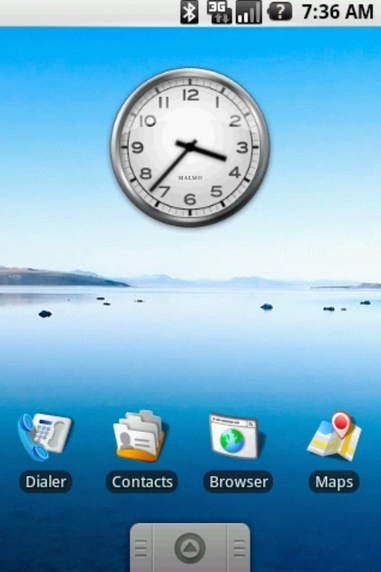
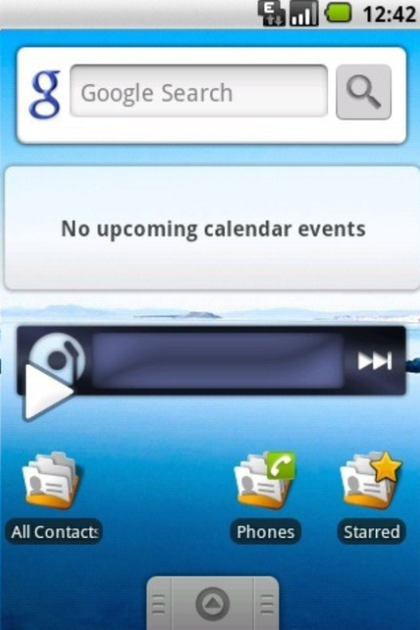
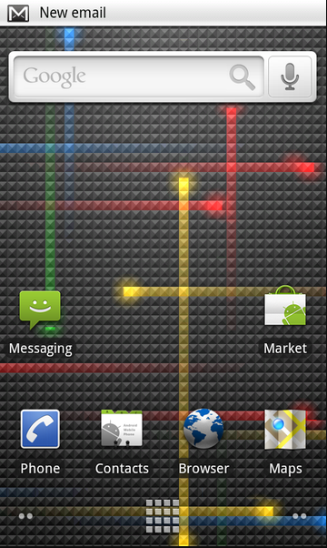
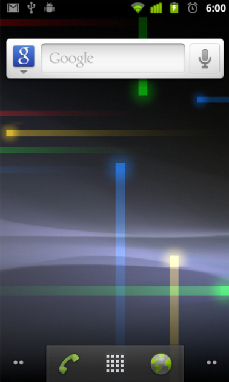
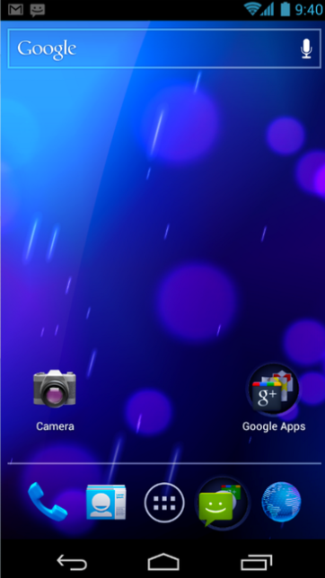
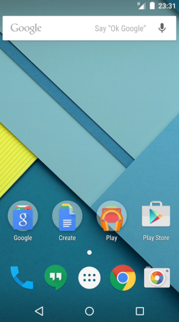

Gerações antigas do Android
Android 1.0
O Android estreou em 2008 com o celular HTC Dream. Naquela época, a loja de apps ainda se chamava Android Market e contava apenas com alguns aplicativos do Google, atualizados junto com o sistema.
{kind=link}
Não era possível fazer muita coisa por lá, mas o SO já executava algumas funções básicas para enviar mensagens, acessar a web e organizar os contatos na agenda. Alguns detalhes são mantidos até hoje, como a gaveta de aplicativos e a barra de informações no topo da tela.
Tela inicial do Android 1.1
Android 1.5 Cupcake
O sistema recebeu algumas atualizações pontuais e deu o primeiro grande salto em 2009, com o Android 1.5 Cupcake. Pela primeira vez, a marca adotou o uso de sobremesas para diferenciar cada atualização maior do sistema, padrão que durou por mais de 10 anos.
O Cupcake já pavimentou o caminho para os smartphones mais modernos da época, adotou suporte para um teclado 100% digital e trouxe funções como a rotação automática do visor e os widgets na tela inicial.
Versão Cupcake do Android introduziu as famosas widgets na tela
Android 1.6 Donut
A versão Donut chegou no mesmo ano e ajudou a deixar o sistema cada vez mais compatível com os dispositivos lançados no mercado. Pela primeira vez, era possível adaptar a interface a diferentes tamanhos de tela, além de receber suporte para redes de CDMA, muito comuns nos EUA.
A atualização também contou com recursos que duram até hoje, como a conversão de texto com a fala e a câmera integrada com a galeria.
Android 2.0 Eclair
A segunda geração do Android foi lançada um mês após o 1.6 Donut e trouxe muitas novidades para o SO. Pela primeira vez, era possível usar a navegação por GPS no Maps, cadastrar mais de uma conta no sistema e usar papéis de parede animados.
A versão Eclair também representou uma grande evolução na câmera, com a chegada do modo de disparo manual e o suporte ao flash.
Captura de tela do Android Eclair
Android 2.2 Froyo
A versão Froyo (abreviação de Frozen Yogurt) chegou em 2010 com algumas otimizações no sistema, mas poucas mudanças visuais. O destaque fica por conta da estreia das notificações push, do bloqueio de tela com PIN e da opção de desativar os dados móveis.
Android 2.3 Gingerbread
Se o antecessor não mexeu muito no visual, o Android 2.3 Gingerbread, de dezembro do mesmo ano, chegou mudanças na interface. A tela do sistema adotou mais tons de preto e verde, duas cores muito identificadas com o mascote da marca, e abriu espaço para novas resoluções de vídeo nas telas.
O update também trouxe ferramentas muito úteis, como suporte ao NFC para ações por aproximação, compatibilidade com câmera frontal e o comando para selecionar palavras em textos. Além disso, foi o primeiro Android com um easter egg da versão escondido nas configurações.
Versão 2.3 Gingerbread trouxe algumas das primeiras mudanças marcantes na interface
Android 3.0 Honeycomb (exclusiva para tablets)
A versão 3.0, de fevereiro de 2011, destoa do restante da lista por ser exclusiva para tablets — espécie de antecessora do Android 12L. O design é voltado a aproveitar o espaço das telas maiores e, pela primeira vez, introduziu os comandos de navegação na tela.
Android 4.0 Ice Cream Sandwich
A versão 4.0 do Android, lançada em outubro de 2011, é uma das mais importantes para o sistema com relação à chegada de novos recursos. O update migrou muitas funções do Honeycomb para celulares, como os botões de navegação, e veio com uma enxurrada de novidades.
Esse Android marcou a estreia do comando para tirar print, trouxe um editor de fotos nativo, liberou o desbloqueio via reconhecimento facial e criou a lista de apps suspensos com miniaturas da tela. Na parte visual, o sistema contou com uma nova fonte e adotou mais tons de azul na interface.
Android 4.0 fez alguns ajustes nos ícones do sistema
Android 4.1 Jelly Bean
O codinome Jelly Bean foi usado entre as versões 4.1 e 4.3, todas lançadas entre junho de 2012 e julho de 2013. Surgiu o Google Now, um esquema de resumo diário de acordo com as preferências do usuário, que mais tarde seria ramificado entre o app do Google e o Google Assistente.
Uma das melhorias mais impactantes foi a opção de expandir as notificações do sistema, o que permite ver mensagens inteiras sem abrir um aplicativo. A interface recebeu algumas melhorias, incluindo transições mais suaves entre telas e a opção de adicionar widgets na tela de bloqueio — que voltaram somente no Android 14.
Android 4.4 Kitkat
A versão 4.4 KitKat, de setembro de 2013, inaugurou o comando “Ok, Google” — na época, ainda era mais rudimentar e funcionava apenas com apps abertos, mas abriu o caminho para a chegada dos assistentes de voz ao sistema.
O sistema do robozinho também ganhou muitas melhorias visuais, com um esquema de cores diferentes. A cor branca passou a dominar as telas de menus e configurações, as fontes ficaram mais finas e as barras de navegação mais transparentes.
Android 5.0 lollipop
O Android 5.0 Lollipop, de 2014, é uma das edições mais marcantes do sistema operacional. Ele marca a chegada do Material Design, um conjunto de instruções visuais com o objetivo de padronizar a interface: predominam os cartões, quadros e sombras na tela, num modelo usado até hoje.
A atualização trouxe suporte a múltiplos usuários no Android, além de uma aba de pesquisa rápida nas configurações. A tela de bloqueio perdeu os widgets, mas ganhou a habilidade de abrir notificações diretamente por lá.
Versão 5.0 marcou uma grnde mudança visual no sistema
Android 6.0 Marshmallow
A versão 6.0 chegou em 2015 e padronizou os lançamentos anuais das novas gerações do Android, com anúncio na conferência Google I/O.
Não há muita mudança visual, mas vale destacar os novos recursos, como suporte a biometria, compatibilidade com USB tipo C, gerenciamento de memória, controle de volume por app e Android Pay para pagamentos pelo celular.
Android 7.0 Nougat
O Android 7.0 Nougat, de 2017, deu grandes passos para tornar o sistema multitarefas e mais acessível para todas as pessoas. Pela primeira vez, foi possível usá-lo com a tela dividida entre dois aplicativos, além de acessar vários recursos para aumentar o zoom na tela e ajustar as cores para diferentes tipos de deficiência visual.
O update marca a chegada do Google Assistente para os celulares, respondendo ao comando “Ok, Google” e herdando características do Google Now.